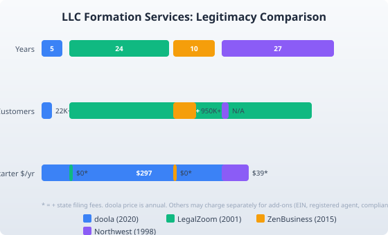

Is Doola Legit? Honest Assessment for LLC Founders (2026)
Last updated: 2026-08-21
Short answer: Yes, doola is a legit LLC formation service backed by Y Combinator with 22,000+ customers and 2,000+ five-star reviews. It is best suited for non-US founders who want a straightforward, all-in-one package at $297/year. It is newer and smaller than LegalZoom, so US-based founders who want the longest track record may prefer a larger provider instead.
You searched "is doola legit" because a YC-backed LLC service sounds almost too good to be true. This page gives you the honest breakdown: what doola actually is, where it shines, where it falls short, and who should look elsewhere.
What is doola and why does it exist?
doola launched in 2020 as part of Y Combinator's S20 batch. The thesis was simple: starting a US business should not require a US address, a US bank account, or a US lawyer on speed dial. That targets the millions of entrepreneurs outside the US who want access to the American financial system.
Today doola is backed by Y Combinator, Hubspot, Nexus Venture Partners, and HustleFund. It has served 22,000+ customers across 175+ countries with 2,000+ five-star reviews. Those numbers are not on the scale of LegalZoom (10 million+ business formations since 2001), but they are real, verifiable, and growing.
The company is incorporated in Delaware and operates from the US. It has real employees, real investors, and a real track record of processing LLC filings.
What does doola actually cost?
doola offers four plans. Here is what you get at each tier as of August 2026:
- Starter ($297/year): LLC or C Corp formation filed in 1-2 business days, EIN, and a US business address. No hidden upsells on the core filing.
- Pulse Bookkeeping ($300/year): Automated bookkeeping, income and expense tagging, bank account syncing, and financial health reports.
- Tax and Compliance ($1,999/year): Everything in Starter plus federal and state tax filing and a 1:1 tax consultation with a CPA.
- Business-in-a-Box ($2,999/year): Everything in Tax and Compliance plus monthly financial statements, synced bookkeeping and taxes, and estimated quarterly tax payments.
The Starter plan at $297/year is where most founders start. That price is annual, not one-time, and it includes the registered agent service for the first year. Compare that to LegalZoom's LLC formation, which starts at $0 for a basic filing but charges separately for an EIN ($69) and registered agent service ($249/year). ZenBusiness offers a $0 Starter plan plus state fees, but add an EIN ($79) and compliance renewal ($199/year) and the first-year total is comparable.
The real cost comparison depends on what you need. If you only need the filing and plan to handle everything else yourself, doola's $297 is straightforward. If you want a bare-bones filing and will DIY the EIN and registered agent, ZenBusiness or LegalZoom's $0 tier may be cheaper.
How does doola compare to LegalZoom, ZenBusiness, and Northwest?

| Signal | doola | LegalZoom | ZenBusiness | Northwest |
|---|---|---|---|---|
| Year founded | 2020 | 2001 | 2015 | 1998 |
| Customers | 22,000+ | 10M+ | 950K+ | Not disclosed |
| Trustpilot / BBB | 4.8/5 (Trustpilot) | 4.4/5 (Trustpilot), A+ BBB | 4.7/5 (Trustpilot), A+ BBB | 4.6/5 (Trustpilot) |
| Starter price | $297/yr (all-inclusive) | $0 + state fees (add-ons cost extra) | $0 + state fees (add-ons cost extra) | $39 + state fees |
| Non-US founder support | Core focus, global banking partner | Limited | Limited | Available but not primary focus |
| YC / VC backed | Yes (YC S20) | No (public / PE) | Yes (multiple rounds) | No |
| Bookkeeping / tax | Integrated plans | Separate services | Add-on compliance | Limited |
Is doola safe to use with your personal information?
Here is what matters:
- Legal standing: doola files your LLC formation directly with the state Secretary of State. Your formation documents are real government filings.
- Data handling: doola collects the same information any formation service needs: name, address, phone, email, and a passport for banking setup. They store this data to manage ongoing compliance.
- Investor backing: Y Combinator-backed companies go through due diligence. Nexus Venture Partners and Hubspot are institutional investors with reputations to protect.
- Track record: 22,000+ customers, 175 countries, 2,000+ five-star reviews on Trustpilot (4.8/5). Complaints exist, but the ratio is strong.
doola is as safe as any formation service. The bigger risk with any service is ongoing compliance being missed, not the formation itself.
What doola does well
- Non-US founder focus: This is doola's core advantage. If you are based outside the US and want a US LLC with a US bank account (Mercury partnership), doola has purpose-built this workflow. LegalZoom and ZenBusiness treat international founders as an edge case.
- Transparent pricing: The $297 Starter plan includes formation, EIN, and a business address. No surprises. Compare that to LegalZoom's $0 base where you pay $69 for an EIN, $249/year for a registered agent, and more for compliance.
- All-in-one packages: Bookkeeping, tax filing, and compliance are built into the platform. You do not need to integrate three separate tools.
- Fast filing: doola files your LLC in 1-2 business days. That is faster than ZenBusiness Starter (7-10 business days) and comparable to LegalZoom's expedited options.
Where doola falls short
- Newer and smaller: doola has about 5 years of history. LegalZoom has been operating since 2001. That is a 20-year gap in institutional knowledge, customer volume, and edge-case handling. Unusual formations (multi-state, complex ownership) may benefit from a larger firm.
- Higher upfront cost: At $297/year, doola is pricier than the $0 base plans from ZenBusiness or LegalZoom. If you only need a basic filing and plan to DIY everything else, you can do it cheaper elsewhere.
- Smaller support team: Some Trustpilot reviews mention slow response times during peak periods. The quality is generally good, but staffing depth is limited compared to LegalZoom.
- Annual billing only: No month-to-month option. You are committed for a year.
When should you pick doola over alternatives?
When to pick doola: You are a non-US founder who wants a US LLC, a US bank account, and a single service that handles formation, EIN, registered agent, and ongoing compliance. You value simplicity and transparency over the lowest possible price. You want YC-backed accountability.
Consider instead: For the cheapest US filing, ZenBusiness starts at $0 plus state fees. For the longest track record and largest support network, LegalZoom has processed over 10 million businesses. For privacy-focused formation, Northwest Registered Agent is the specialist.
The bottom line
doola is a legitimate LLC formation service. It is not a scam, not a shell company, and not going anywhere. It is backed by serious investors, has processed thousands of real LLC filings, and has a strong Trustpilot rating. The question is not whether doola is legit. The question is whether it is the right fit for your situation.
If you are a founder outside the US who wants a US business with minimal hassle, doola is one of the best options available. If you are a US founder looking for the cheapest or most established service, there are better fits.
Check doola's current pricing at doola.com/pricing to see if the Starter plan ($297/year) works for your budget and timeline.
FAQ
Is doola a real company or a scam?
doola is a real, registered US company. It was part of Y Combinator's S20 batch, is backed by Hubspot, Nexus Venture Partners, and HustleFund, and has served 22,000+ customers across 175+ countries. It files LLC formations directly with state Secretary of State offices. The company is not a scam.
Does doola have hidden fees?
doola's Starter plan at $297/year includes LLC formation, EIN, and a US business address. State filing fees are separate (that is true for every formation service). The higher-tier plans (bookkeeping, tax, compliance) are clearly priced. There are no surprise charges on the Starter plan. The main cost consideration is that $297 is annual, not one-time.
How does doola compare to LegalZoom?
LegalZoom is larger (10M+ customers, founded 2001) and has a longer track record. doola (founded 2020, 22K+ customers) is smaller but offers a more focused experience for non-US founders and a simpler all-in-one pricing model. LegalZoom's base plan starts at $0 but charges separately for EIN, registered agent, and compliance. doola's $297 Starter includes everything. See our full LegalZoom review for more detail.
Can non-US citizens use doola to form an LLC?
Yes. That is doola's core market. You do not need to be a US citizen or have a US address. doola handles the LLC formation, provides a US business address, and connects you with Mercury for a US business bank account. You will need a passport for the banking setup.
What happens if I want to cancel doola?
doola bills annually. If you cancel, you keep your LLC (the state filing is permanent), but you lose doola's registered agent service and ongoing compliance support. You would need to appoint a new registered agent in your state or let the LLC go dormant. There is no prorated refund for partial-year cancellations.
Is doola worth it for US-based founders?
It depends on your priorities. If you want a straightforward, all-in-one formation package and do not mind paying $297/year, doola is fine. If you want the cheapest possible filing and plan to DIY compliance, ZenBusiness ($0 base) or LegalZoom ($0 base) may save you money. If you value the longest track record and largest support network, LegalZoom is the safe choice. For non-US founders specifically, doola remains the strongest option.
Get our free LLC Formation Checklist
Step-by-step guide: state fees, timelines, EIN process, and the exact paperwork checklist. Used by 200+ founders.
Download Free Checklist